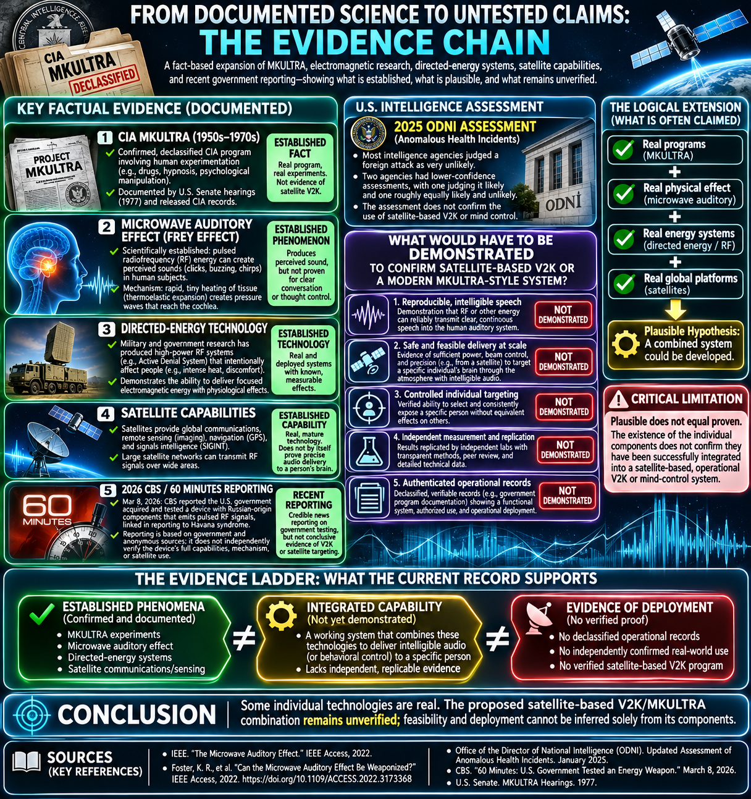
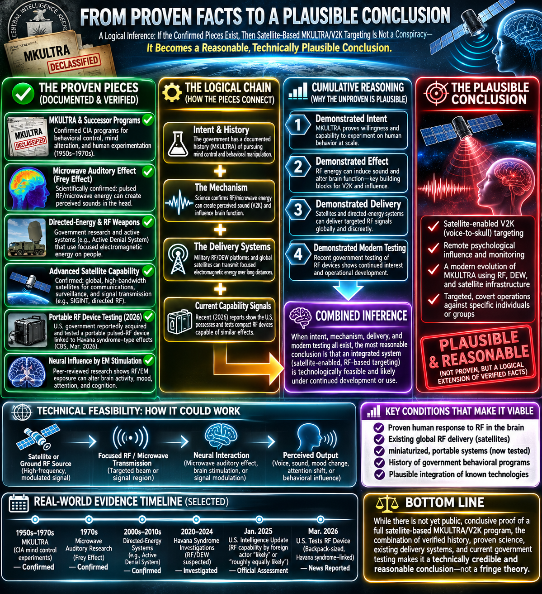

Explore the evidence. Test the connections.
A visual companion to the EvidenceChain MAX codebase: historical programs, electromagnetic science, public SIGINT reporting, satellite technology, and neural-interface research, examined without confusing evidence with speculation.

The two evidence maps
Select an image to view it full size.
Documented science → untested claims
Separates verified components from the additional demonstrations required to establish integrated capability.

The proposed logical chain
Presents a hypothesis for discussion. Its claims of feasibility or likelihood are not independently established by the component evidence.
Evidence, sources & limitations
Claim-to-evidence map
Conceptual graph, not proof of causation. The backend offers a machine-readable graph at /api/graph when run locally.
Explore the codebase
Research catalog
app/research.py
Curated sources, evidence statuses, claim dependencies, and reproducible claim analysis.
View sourceREST API
app/main.py
FastAPI routes for evidence, claims, graph data, summary, and RF model calculations.
View sourceRF mathematics
app/physics.py
Idealized free-space path loss, wavelength, and photon-energy calculations.
View sourceTesting & deployment
tests/ + .github/
Automated tests, CI workflow, and Docker setup for running the Python backend.
View testsHow the parts connect
What this build does and does not do
Implemented Static Pages explorer, search, claim map, educational RF calculator, source-code links, FastAPI backend when hosted separately.
Not implemented Live classified intelligence feeds, proprietary SIGINT database access, neural surveillance, or proof of satellite-delivered V2K.
GitHub Pages cannot run Python/FastAPI. The interactive components on this page work in the browser without a server.
RF propagation sandbox
Free-space path loss
Idealized link attenuation only; this does not model a person's exposure or any neurological effect.
What the equations mean
Assumes free-space propagation. Omits antenna gain, atmosphere, obstructions, power budgets, receiver sensitivity, tissue interaction, and every factor required for a real-world exposure assessment.
Inspect the Python implementationAPI explorer
Static reference on Pages · Live Swagger UI when running the backend
Example response
Representative output from GET /api/summary, based on the included research dataset.
Run the live API locally
Do not expect API calls to work at a github.io address; GitHub Pages serves static files only.
Possible next extensions
Public data ingestion
Crossref, OpenAlex, arXiv, and public government documents with provenance, timestamps, and duplicate detection.
Neuroscience datasets
Opt-in, published EEG/BCI datasets to investigate the limits of signal classification under controlled conditions—not remote mind reading.
Satellite research
Public orbital element visualization and propagation studies with clear limits on what they establish about communications and sensing.
Evidence versioning
Signed source snapshots, reproducibility reports, confidence calibration, and counterevidence tracking.
Graph analysis
Compare independent support, citation dependencies, and gaps between component science and integrated claims.
Ethical SIGINT education
Public reports, simulated datasets, and legal/privacy safeguards; no unauthorized interception or private database access.